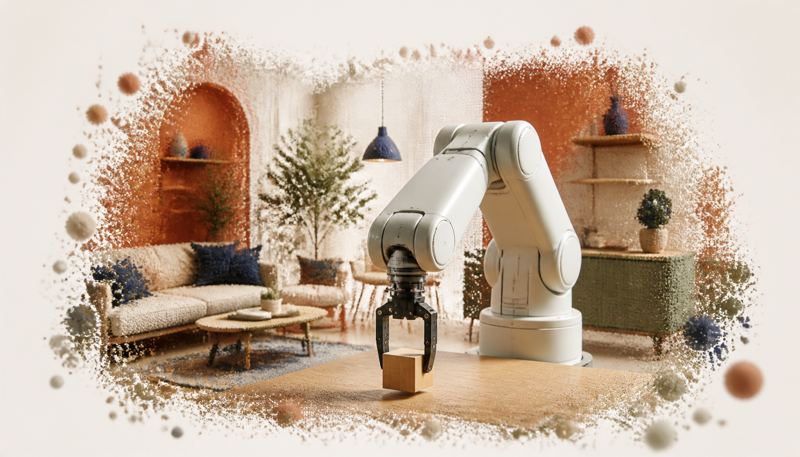
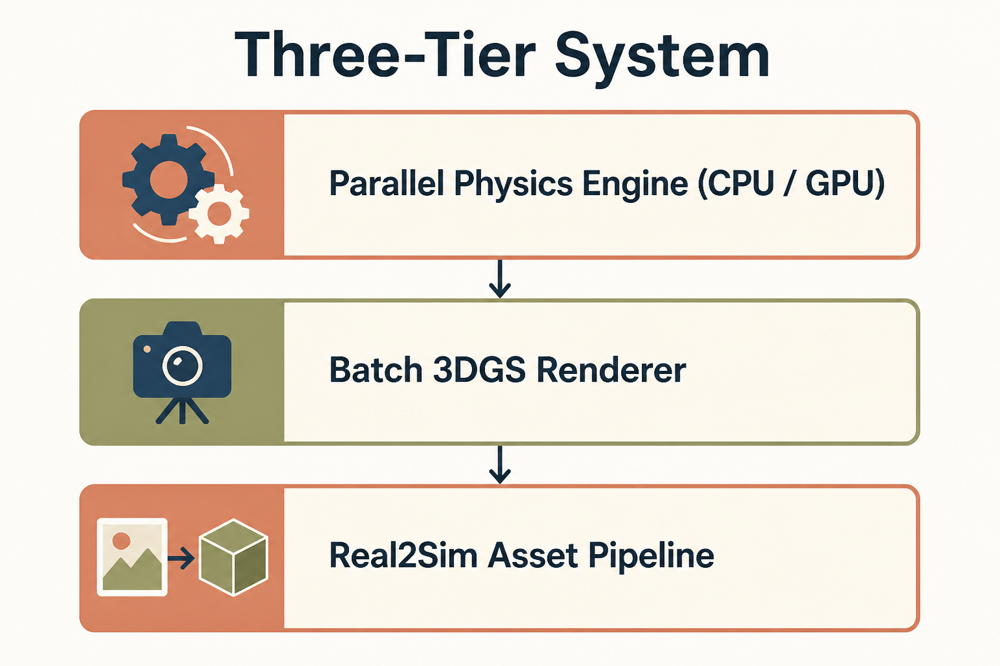
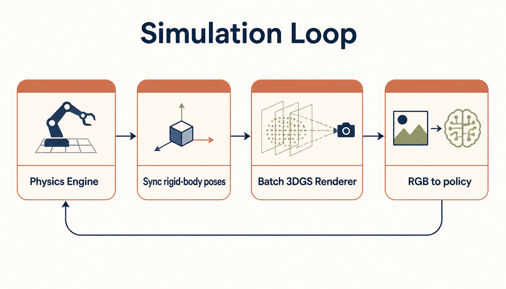
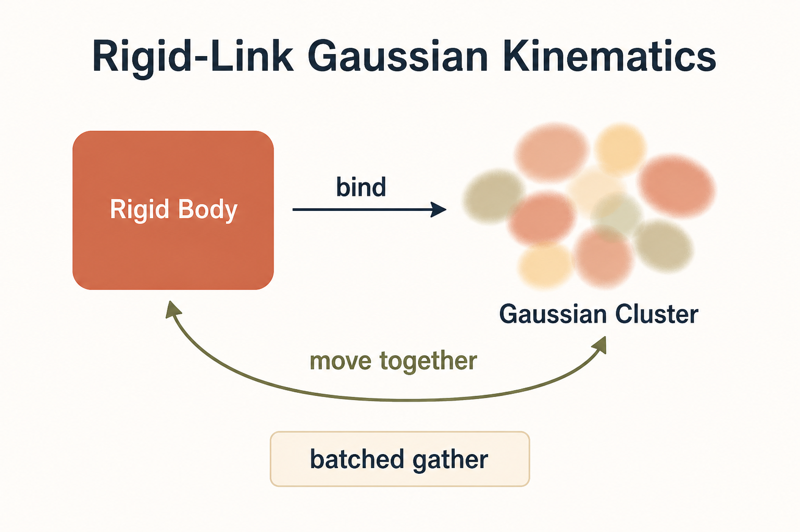
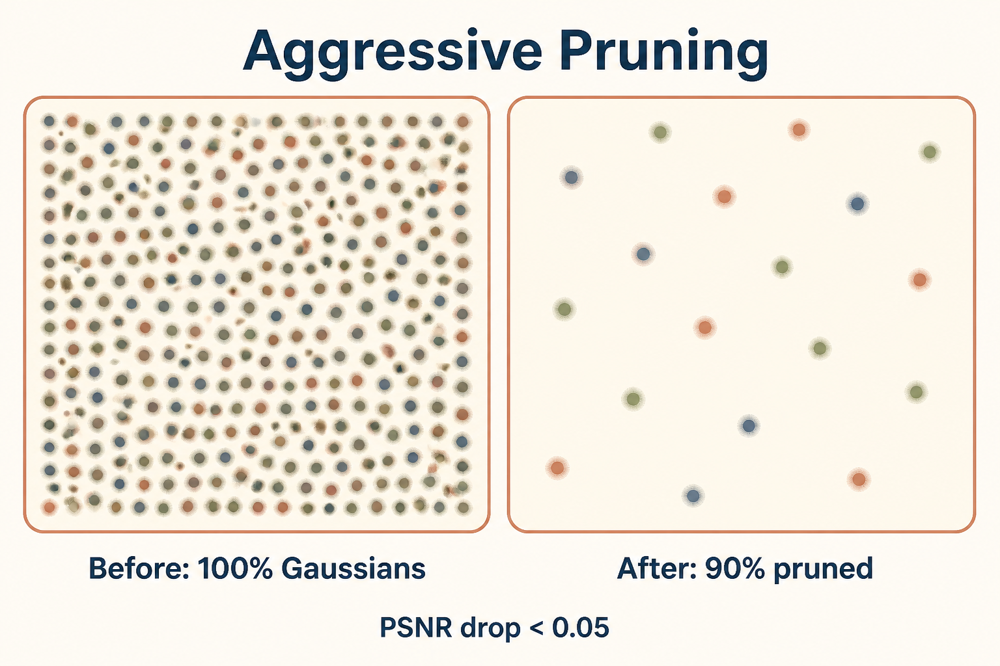
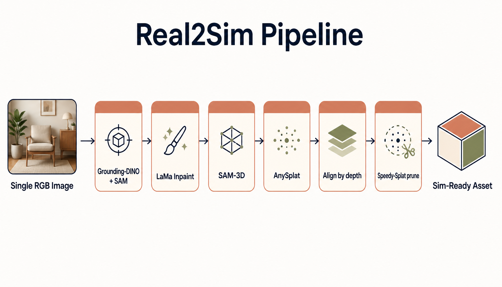
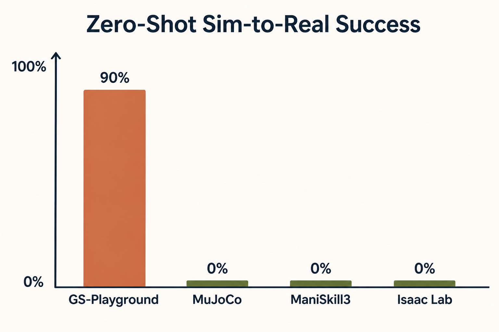

A high-throughput photorealistic simulator for vision-informed robot learning.
It uses 3D Gaussian Splatting (3DGS) not for geometry or physics, but purely as the
photorealistic rendering layer — tightly coupled to a custom parallel physics engine so that
vision-based RL policies trained in simulation transfer to real robots.
Jia, Zhang, Zhang, Wu, Yu et al. · "GS-Playground: A High-Throughput
Photorealistic Simulator for Vision-Informed Robot Learning" · arXiv:2604.25459
Visual explainer · diagrams generated with gpt-image-2 (fal.ai), low-res · authoritative
numbers in the stat tiles below.

The idea in one picture. A robot manipulates objects inside a
photorealistic, Gaussian-splatted scene — the splats are the visual skin; a separate
engine does the physics.
The short version. 3DGS is the photorealistic display surface.
RLGK is the glue that drives those splats from physics state cheaply, at batch scale.
Pruning is what makes a huge batch fit in VRAM. And a single-image Real2Sim
pipeline is what fills the simulator with real-looking assets.
§By the numbers
10,000
FPS total rendering throughput
2,048
scenes rendered at once
640×480
render resolution per view
90%
zero-shot real-world grasp success (raw RGB)
>90%
Gaussians pruned for dynamic batches
<0.05
PSNR drop from pruning (imperceptible)
13DGS is the renderer — a separate engine does the physics
The system has three tiers: a custom parallel physics engine (CPU/GPU), a
batch 3DGS renderer, and a Real2Sim asset pipeline. Gaussians never carry
physics — they are visual skins driven by rigid-body state.

Figure 1. Three tiers. Physics is computed independently; 3DGS only renders;
Real2Sim fills the world with assets.
The simulation loop starts with the physics engine, which advances world state using a
velocity-impulse formulation. The updated rigid-body poses are then synchronized to the
batch 3DGS renderer, which produces RGB images for the policy.

Figure 2. One step of the loop: physics → sync rigid-body poses → batch
3DGS render → RGB pixels to the policy → repeat.
2RLGK binds Gaussians to rigid bodies
Rigid-Link Gaussian Kinematics (RLGK) is the core trick for dynamic scenes. It binds
clusters of 3D Gaussians to corresponding rigid bodies in the physics engine, so the visual
representation moves in lock-step with its physical counterpart — enabling zero-overhead
updates and artifact-free rendering during fast motion or contact.

Figure 3. Each Gaussian stores a rigid-body index and a local pose; the
cluster rides its rigid body and the two always move together.
1
Init — once
Upload a single geometry template; assign every Gaussian a rigid-body index and a stored local pose.
2
Runtime — every step
The physics engine outputs a batch of global poses; RLGK does a batched gather to fetch the
transform for every Gaussian across all environments at once.
For rigid body k with rotation R(q_k) and translation t_k,
each bound Gaussian's world pose is just:
Why it's fast. A single template is broadcast across B environments,
updating B × M points (with M ≈ 10⁶ Gaussians) in sub-milliseconds — the design
minimizes memory bandwidth rather than doing heavy compute.
3Aggressive pruning makes batch 3DGS fit in VRAM
Rendering thousands of scenes at once is a memory problem, not a compute problem. The
pruning strategy removes over 90% of Gaussians for dynamic batches while keeping the
PSNR drop under 0.05 — virtually imperceptible to a visuomotor policy. For full static
scenes they keep roughly 30% of Gaussians with negligible fidelity loss.

Figure 4. Drop >90% of the splats; the rendered image barely changes.
This is the lever behind throughput.
Payoff. With pruning, the batch-3DGS renderer reaches up to
2,048 scenes at 640×480 with total throughput up to 10,000 FPS.
4Real2Sim builds assets from a single photo
The "Image-to-Physics" pipeline solves the asset-creation bottleneck: from a single RGB
image, a fully automated stack reconstructs 3DGS/mesh and estimates geometric and physical
properties — producing simulation-ready assets.

Figure 5. Single photo → segment → inpaint → object & scene 3DGS →
align → prune → sim-ready asset.
Stage
Tool
What it produces
Object segmentation
Grounding-DINO + SAM1/SAM2
object masks
Background cleanup
LaMa
inpainted background
Object reconstruction
SAM-3D (RGB + mask)
object 3DGS + mesh, pose & scale
Scene reconstruction
AnySplat (inpainted bg)
scene 3DGS + depth + camera intrinsics/extrinsics
Alignment
depth-map matching
object placed correctly in the scene
Compression
Speedy-Splat
pruned, memory-efficient Gaussians
5The payoff: visual sim-to-real
All this 3DGS machinery exists so policies see photorealistic pixels in sim and survive
deployment. On a block-grasping task with raw RGB input, the policy achieved a 90%
success rate in zero-shot real-world deployment — with no specialized visual engineering
or scene simplification.

Figure 6. On the same manipulation task, GS-Playground is the only method
that transfers.
Simulator
Zero-shot sim-to-real grasp success
GS-Playground
90%
MuJoCo
0%
ManiSkill3
0%
Isaac Lab
0%
!Honest caveats (flagged by the authors)
Lighting & shadows. 3DGS struggles with randomized lighting and shadows.
Asset generation currently depends on the lighting of the source images, so relighting
is needed to fully decouple appearance from environment.
Rigid bodies only. RLGK assumes rigid bodies, so cloth, fluids and
soft-bodies are not yet handled.